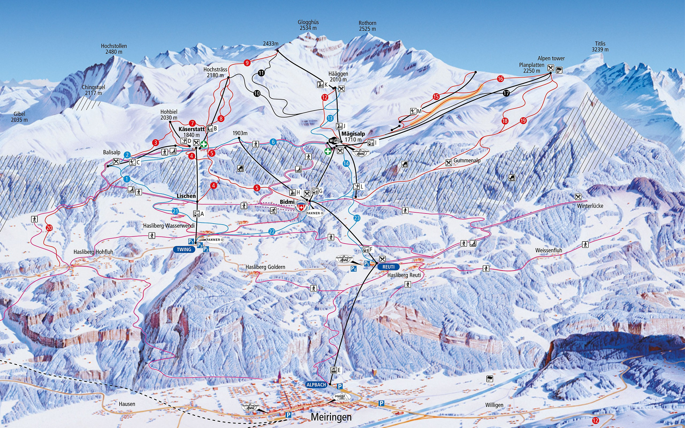

Prealpy Szwajcarskie, w których położona jest dolina Haslital, są częścią Alp Zachodnich. Dookoła Haslital prowadzi łącznie 300 kilometrów oznakowanych szlaków wędrownych i niemal tyle samo tras rowerowych. Dwie kolejki linowe zawiozą do góry do terenu wędrówkowego i rowerowego. W zimie w okolicy do dyspizycji narciaży jest 13 wyciągów, 60 km tras zjazdowych, dla pieszych 25 km zimowych szlaków wędrównych, Audi Skicross Park, Junior Park, nowe centrum narciarskie Hasliberg razem z dużym terenem treningowym "Skihäsliland"
źródło: bergfex.pl
Jak widać zmęczeni wędrowcy na prawie każdym etapie trasy mają możliwość skorzystania z doskonalej skomunikowanej sieci połączeń kolejki linowej.
Miejscem szczególnie wartym odwiedzenia jest Alpen Tower na Planplatten – restauracja panoramiczna na terenie narciarskim Hasliberg na wysokości 2250 m n.p.m. z panoramicznym widokiem 360° na okoliczne łańcuchy górskie. Nawet jeśli turysta nie jest zainteresowany pieszym zdobywaniem szczytów może doświadczyć piękna gór, ponieważ Meiringen jest połącozne z Alpen Tower sprawną siecią kolejek linowych. Dolna stacja znajduję się u podnóża gór, około 200 metrów od Das Hotel Sherlock Holmes, ostatnia - tuż przy Alpen Tower. Koszt przejazdu całej trasy w dwie str0ny wynosi około 100 euro.